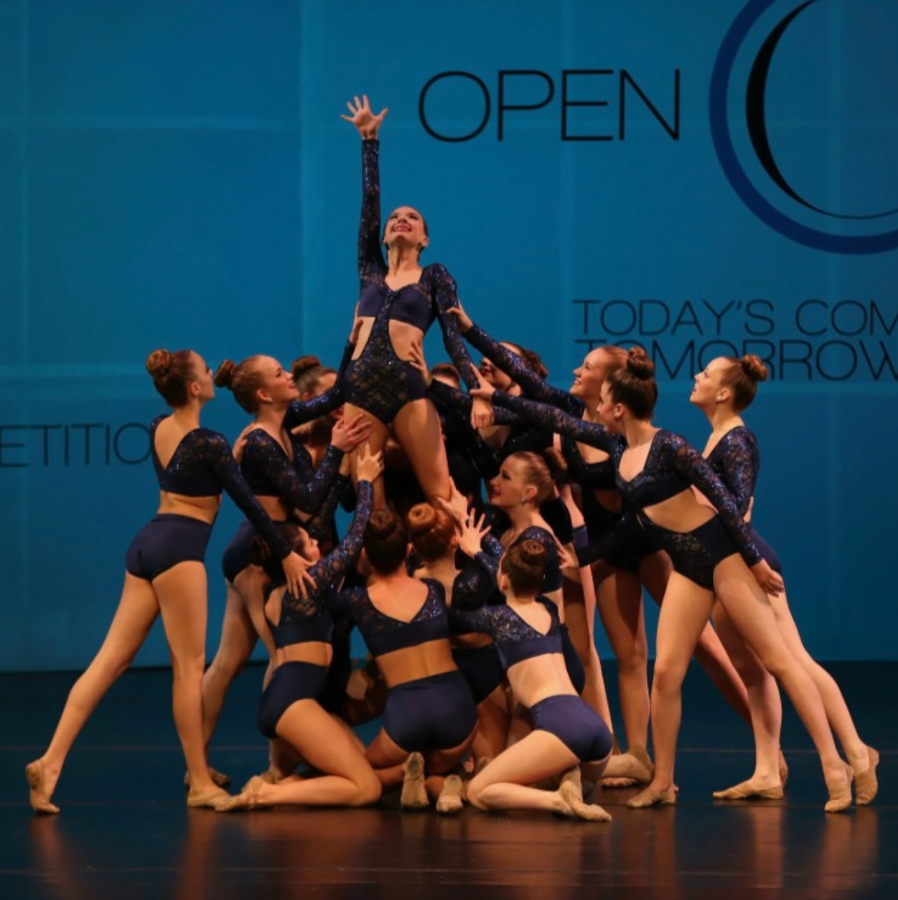
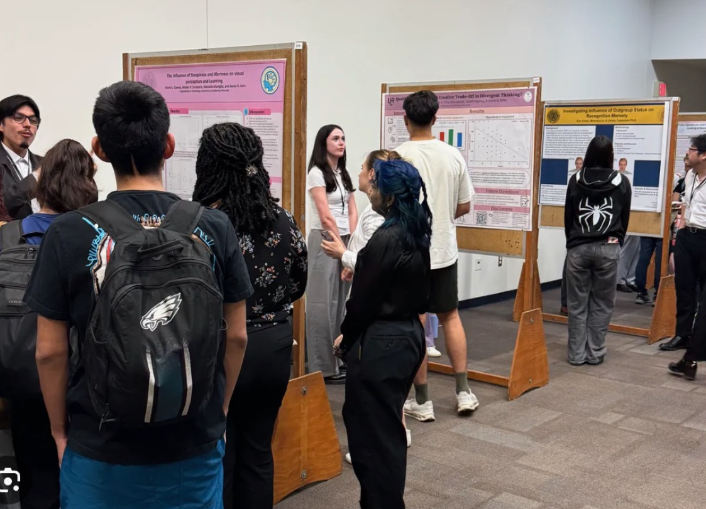

Hello, my name is Savannah West, I am a first year Psychology major at the University of California-Riverside. I have been dancing for 10 years with a studio and was on my high school's Pom team for 4 years. Through dance I have developed skills in discipline, teamwork and confidence. I have learned to be more reliable and have better time management skills.
In addition to athletics, I was previously enrolled in my high school's Peer Counseling program. Where I helped other students work through personal, and academic hardships. This program taught me more about emotional intelligence and empathy and how to connect to people on a deeper level of trust, while continuing to work on my problem solving abilities. I value being someone that others can rely on for support and comfort.
Outside of school, I am often seen with friends. I value my friendships a lot and keep a tight knit group of people around me whom I have known all since childhood. Through our friendships we became family friends and we learned that we can always count on each other for help and support.
I maintain my family’s values, by always putting family first. Even now in college I have organized my schedule so that I am available to take my younger sister to school when my mom has to fly for work. My mother has always been my biggest role model in my life. She is a first generation American and owned a roofing company in her twenties to help pay to go to college to become a nurse. Today, my mother has worked her way to the top. People call my mother and offer her job after job to come in and improve their facilities because she is so well known in her industry.
My mothers work in the medical field is what encouraged my decision to go to school to become a psychiatrist. Psychiatry is important and often overlooked because it is not usually something that we can see physical traits of. However, the mind is just as important as the body. Because of the history we have of overlooking mental health, we as a society have not been properly taught how to take care of it. I improve my mental health through spending quality time with my friends and family and keeping busy through school and dance. I also find time to try new hobbies like painting, drawing and baking. I like to try new foods, new experiences, and meet new people. These are all crucial components to having good mental health.
As I continue my journey at University of California Riverside, I am determined to bring together my values and experiences that have shaped me into the individual I am today. My background in athletics, peer counseling and family responsibility is what has made it possible for me to connect with other people on such a level that they can not only trust me, but believe in me to help them live a more impactful and fulfilling life. With dedication to my education and the support of my friends and family I look forward to being a reliable psychiatrist that can benefit the community.
•Demonstrated leadership skills alongside my teammates in order to create a cooperative
and collaborative atmosphere.
• Organized and ran events and fundraisers, often collaborating with other departments
●
• Worked with children ages 3-12 during camps
• Provided one on one academic support to student under the age of 12
• Helped to improve students understanding of course material and study habits
• Encouraged more effective study habits to support students independent learning skills
• Assisted in English, Math, Science, and History
• Is experienced with children ages 4-12
Planned and engaged in activities that supported learning and creativity
• Managed daily routines such as meals , hygiene and bedtime
• Communicated effectively with parents regarding schedules, behavior, and needs

